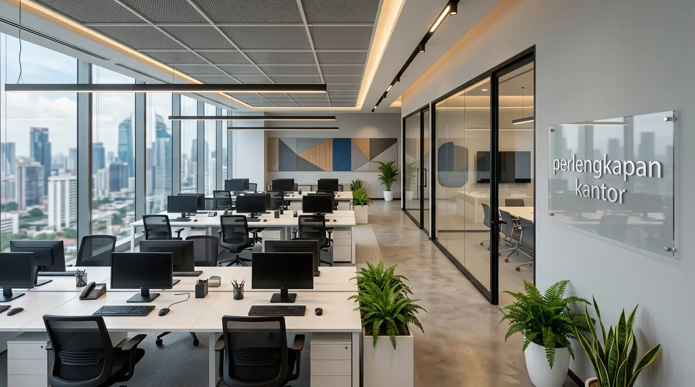

Mengapa Perusahaan Membutuhkan Jasa Pemasangan Partisi Kantor Jakarta Profesional?
Perusahaan membutuhkan jasa pemasangan partisi kantor Jakarta profesional karena sekat non-permanen berkualitas tinggi mampu membagi luas lantai secara efisien, memaksimalkan pencahayaan sinar matahari, serta menciptakan ruang kerja yang estetis tanpa perlu merusak struktur bangunan utama. Berdasarkan data Jakarta Commercial Interior Index 2025-2026, penggunaan partisi kaca aluminium memotong durasi renovasi tata ruang kantor hingga 44,5% dibanding pembangunan dinding semen konvensional. Laporan Corporate Workspace Efficiency 2025 juga mencatat bahwa 82% gedung perkantoran kelas A di kawasan Sudirman-Thamrin mewajibkan penggunaan sekat modular yang fleksibel untuk mempermudah pemulihan kondisi ruangan saat masa sewa berakhir.
Efisiensi penataan ruang sangat menentukan kenyamanan interaksi dan konsentrasi harian karyawan di dalam kantor. Sekat ruangan yang dirancang secara sembarangan sering kali menimbulkan kebocoran suara yang mengganggu rapat penting serta menutup saluran sirkulasi udara AC. Oleh karena itu, bermitra bersama penyedia jasa terpercaya dan melengkapi area kerja melalui distributor Perlengkapan Kantor merupakan investasi strategis untuk mewujudkan lingkungan bisnis yang adaptif dan profesional.
Tabel perbandingan spesifikasi material sekat ruangan perkantoran berikut memperlihatkan keunggulan masing-masing opsi:
| Jenis Material Sekat | Daya Tahan & Kekuatan | Proteksi Privasi Suara | Efisiensi Pencahayaan |
|---|---|---|---|
| Partisi Kaca Tempered (Frameless) | Sangat Tinggi (Tahan Benturan) | Sedang (Dapat Ditambah Peredam) | Sangat Maksimal (100% Terang) |
| Partisi Aluminium Rangka | Tinggi (Tahan Karat & Rayap) | Tinggi (Menggunakan Double Glass) | Fleksibel (Dapat Disesuaikan) |
| Partisi Gypsum Hollow | Sedang (Mudah Dirawat) | Sangat Tinggi (Isi Rockwool Padat) | Tertutup Penuh (Butuh Lampu) |
- Partisi kaca aluminium memotong durasi renovasi hingga 44,5%.
- 82% gedung kelas A di Sudirman-Thamrin menggunakan sekat modular fleksibel.
- Sistem knockdown memudahkan pembongkaran dan pemindahan ke lokasi baru.
Material Apa Saja yang Paling Direkomendasikan untuk Partisi Kantor Modern?
Material yang paling direkomendasikan untuk partisi kantor modern meliputi kaca tempered tebal 10mm hingga 12mm, rangka aluminium extrusion tahan karat, papan gipsum fire-rated, serta peredam suara rockwool berdensitas tinggi. Kombinasi kaca bening dan rangka aluminium hitam matte memberikan kesan visual yang modern, bersih, dan elegan bagi area resepsionis maupun ruang direksi.
Fitur utama tiap material pendukung sekat ruangan:
- Kaca Tempered Benar-Benar Aman: Memiliki kekuatan fisik hingga lima kali lipat kaca biasa dan tidak berbahaya jika pecah.
- Rangka Aluminium Anodized: Lapisan pelindung logam yang tahan terhadap perubahan kelembapan udara AC dan bebas karat.
- Sticker Sanblast Kaca: Pelapis stiker buram yang memberikan privasi visual tanpa mengorbankan masuknya pasokan cahaya.
- Pintu Kaca Inset Hydraulic: Engsel engsel lantai (floor hinge) yang menutup pintu secara perlahan tanpa hembusan angin keras.
- ✅ Kaca tempered tebal 10-12 mm untuk keamanan maksimal.
- ✅ Rangka aluminium anodized anti karat.
- ✅ Sticker sanblast untuk privasi visual.
- ✅ Floor hinge hydraulic untuk pintu kaca.
Bagaimana Langkah-Langkah Proses Pengerjaan Pemasangan Partisi Kantor?
Langkah-langkah proses pengerjaan pemasangan partisi kantor diawali dengan pengukuran dimensi lokasi (survey site), pembuatan gambar kerja CAD 2D/3D, pemotongan bahan presisi di pabrik, instalasi rangka pelat dasar di lokasi, serta verifikasi kerapian lis sealant silicon.
Tahapan pengerjaan sistematis yang efisien:
- Survei Lokasi dan Layouting: Menentukan titik pemasangan tiang penyangga yang tidak mengganggu jalur kabel dan ducting AC.
- Fabrikasi Rangka Aluminium: Memotong profil aluminium sesuai sudut ruangan untuk memastikan sambungan siku rapat.
- Pemasangan Kaca dan Sealant: Memasang panel kaca secara presisi lalu mengisi celah menggunakan sealant silikon anti-jamur.
- Serah Terima Pekerjaan (Handover): Memeriksa kerapian pekerjaan dan menguji fungsi bukaan pintu bersama tim manajemen gedung.
Dapatkan kepastian rancangan sekat ruangan dan penawaran harga grosir mebel kerja dengan memesan peranti interior melalui distributor Perlengkapan Kantor milik kami.

Hasil pemasangan partisi kaca aluminium dari Perlengkapan Kantor — rapi, modern, dan sesuai standar gedung.
Apa Saja Kesalahan dalam Mengatur Sekat Ruangan Kantor?
Kesalahan dalam mengatur sekat ruangan kantor mencakup mengabaikan faktor kekedapan suara di ruang rapat eksekutif, tidak memperhitungkan alur sirkulasi udara sistem pendingin gedung, serta memilih material kaca tipis yang rawan pecah. Sekat ruangan tanpa peredam akustik yang memadai akan membuat percakapan sensitif di ruang direksi terdengar ke luar area staf.
Selain itu, posisi sekat yang membelakangi jendela utama dapat memblokir masuknya sinar matahari ke bagian dalam gedung. Mengonsultasikan kebutuhan perancangan bersama tim ahli dari distributor Perlengkapan Kantor membantu mencegah timbulnya kesalahan tata ruang tersebut.
- ❌ Mengabaikan peredam suara di ruang rapat eksekutif.
- ❌ Tidak memperhitungkan alur sirkulasi AC.
- ❌ Memilih kaca tipis yang rawan pecah.
- ❌ Posisi sekat membelakangi jendela utama.
Pertanyaan Populer Seputar Jasa Pemasangan Partisi Kantor Jakarta
Kesimpulan Praktis
Menggunakan jasa pemasangan partisi kantor Jakarta yang profesional merupakan langkah tepat untuk menciptakan pembagian tata ruang kerja yang efisien, berestetika tinggi, dan kondusif bagi produktivitas staf. Didukung oleh pasokan furnitur kerja dan sarana interior dari Perlengkapan Kantor, seluruh urusan renovasi ruang bisnis Anda terjamin aman.

Penulis: Ardhana Prasasta
Spesialis konten & konsultan furnitur tata ruang kantor di Perlengkapan Kantor. Berpengalaman dalam memberikan panduan solusi ergonomis, efisiensi ruang kerja, dan pengadaan perlengkapan kantor korporat.